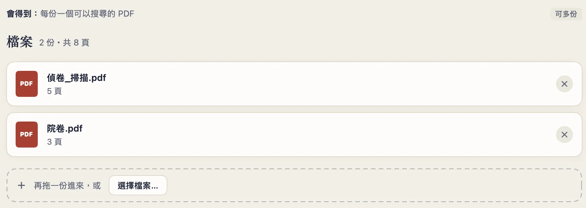
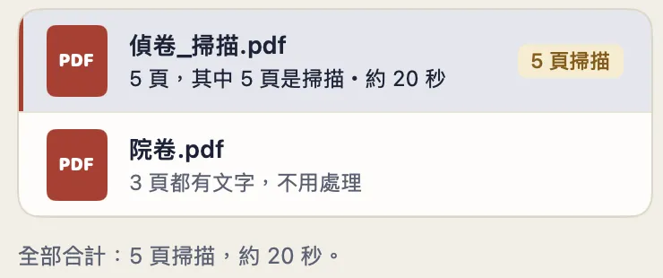
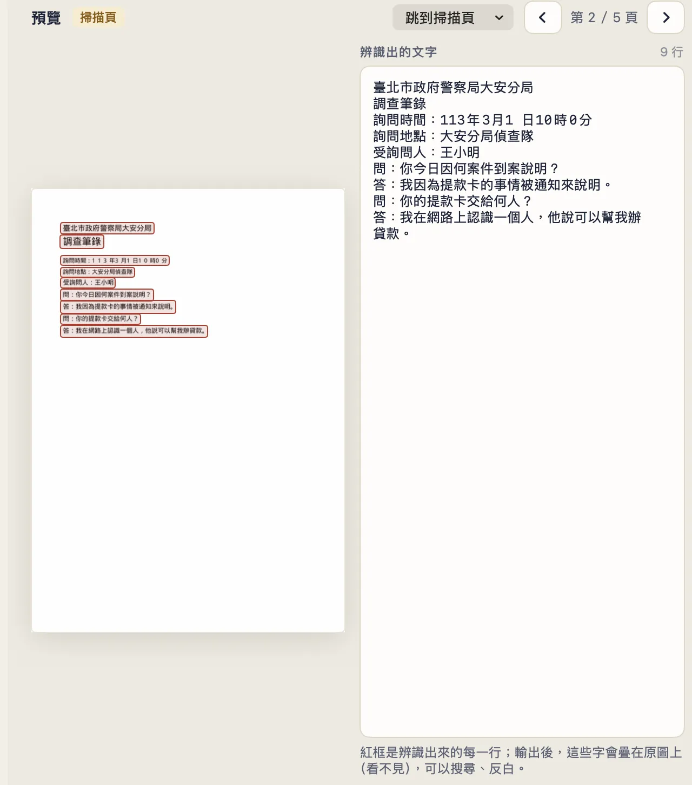

讓掃描的卷證可以搜尋、複製：可搜尋 PDF 教學
閱卷拿到的掃描卷，在 PDF 閱讀程式裡搜尋不到任何字，因為每一頁其實是一張圖片。「可搜尋 PDF」在這台裝置上辨識每一張掃描頁的文字，再把文字疊回原頁，存成一份新的 PDF。
這個工具做什麼
「可搜尋 PDF」在首頁的「讀卷」那一組（Mac 也可以按 ⌘7）。它做的事：
- 檢查每一頁有沒有文字。只有圖片、沒有文字的頁，當成掃描頁。
- 用 Apple 系統內建的文字辨識，在這台裝置上辨識掃描頁的文字。卷證不會上傳。
- 把辨識出的文字用看不見的文字層疊在原圖上，另存一份 PDF。頁面看起來跟原本一樣，但可以搜尋、反白、複製。
原本的 PDF 不會被改動。已經有文字的頁和空白頁不處理。
示範用的是合成卷「偵卷.pdf」每頁轉成圖片做成的「偵卷_掃描.pdf」（5 頁都是掃描），以及本來就有文字的「院卷.pdf」。
什麼時候需要它
審判工具箱的書籤形成、供述切割、全文搜尋、PDF 轉 Markdown 等工具，遇到掃描頁時會自己先辨識文字，不需要先用這個工具。
這個工具是給「PDF 本身」用的：處理過的 PDF 用預覽程式、Acrobat 或其他 PDF 閱讀程式打開，也能搜尋、反白、複製文字；交給別人或其他軟體時，對方拿到的也是可以搜尋的檔案。
第一步：放入 PDF
點「可搜尋 PDF」，把 PDF 拖進虛線框，或按「選擇檔案…」。可以一次放好幾份，每份各自輸出。

有開啟密碼的 PDF，放進來時會問密碼。放好後按右上角的「下一步：設定與預覽」。
第二步：看哪幾頁是掃描、先試辨識一頁
左邊是每一份的檢查結果：「5 頁，其中 5 頁是掃描・約 20 秒」，右側標著「5 頁掃描」。整份都有文字的寫「3 頁都有文字，不用處理」，這一份不會輸出。下面是全部合計的掃描頁數與預估時間。

右邊預覽目前這一份的一頁。App 會先跳到第一張掃描頁，辨識那一頁，在頁面上用紅框標出辨識出的每一行，旁邊列出辨識出的文字與行數。

- 用右上角的箭頭換頁，或點「跳到掃描頁」選一頁。頁面上方標著「掃描頁」或「已有文字，不處理」。
- 點左邊另一份，右邊換成那一份。
- 閒置一陣子後第一次辨識，會顯示「辨識中…第一次辨識可能要十幾秒（系統在載入文字辨識）。」
這一步的重點是看辨識的品質：紅框有沒有對在字上、右邊的文字錯字多不多。示範這頁是乾淨的電腦字，幾乎都對，只有「3月1日」中間多了一個空白；用 PDF 閱讀程式搜尋「3月1日」時，可能因此找不到。實際的掃描卷字小、淡、歪斜或有雜點時，錯字會多很多。
確認後按「下一步：輸出」。所有放入的檔案都已經有文字時，按鈕不能按，旁邊寫「這幾份都已經有文字層，不用處理」。
第三步：輸出
左邊寫著要辨識幾頁、預估時間，右邊列出會產生的檔案，只有含掃描頁的那幾份。檔名是原檔名加「_可搜尋」。
- 預估時間以每頁約 4 秒計算，實際時間依電腦而不同，可能比預估快。同一頁如果剛才在書籤形成、PDF 轉 Markdown 等工具辨識過，會直接沿用。
- 按「開始輸出 N 個檔案」後，畫面顯示「處理中」與百分比。卷很大時可以按「停止」，已經完成的檔案會留在輸出資料夾，做到一半的那一份不會留下。
點開「詳細記錄」，會寫出每一份有幾頁寫入文字層、幾頁辨識不出字。檔案存在「下載項目 › 審判工具箱」底下新開的資料夾，也可以在輸出前用「存到 › 選擇…」換位置。
輸出後怎麼確認
用 PDF 閱讀程式打開輸出的檔案，搜尋一個這份卷裡一定有的詞（例如被告的姓名或案號），看找不找得到、反白的位置對不對。找不到的話，多半是那個詞被辨識錯了；可以回到第二步，翻到那一頁看辨識出的文字。
在 iPhone・iPad 上
步驟相同。在 iPhone 上，檔案清單、頁面預覽與辨識出的文字由上往下排，「下一步」等按鈕在畫面下方，輸出的檔案在「檔案」App 的「我的 iPhone › 審判工具箱」。iPhone・iPad 上也可以用相機掃描紙本，再用這個工具處理。細節在在 iPhone・iPad 上使用那篇。
做不到的事／要注意
- 辨識錯的字搜不到。寫進去的是辨識出的文字，讀錯的字就以讀錯的樣子存在，搜尋原本的寫法找不到。
- 只處理橫書。直書的文字、很小的表格字、手寫、印章認不全。
- 反白的位置是每一行縮放對齊的；同一行字距不平均時，中間的字反白會偏幾點。
- 已經有文字的頁不會重新辨識。原檔的文字層本身有錯（例如轉檔時亂碼），這個工具不會修正。
- 辨識很花時間，卷大時請預留時間；可以停止，再分批處理。
- 原檔有開啟密碼時，輸出的檔案沒有密碼。需要的話，用密碼工具再加上。
要在幾卷裡一起找關鍵字、直接跳到那一頁，用全文搜尋，不必先轉成可搜尋 PDF。要把文字取出來另存，用PDF 轉 Markdown。簡短的步驟在使用說明。
常見問題
可搜尋 PDF 要多久？
畫面上的預估以每頁約 4 秒計算，實際時間依電腦而不同。處理中可以按「停止」，已完成的檔案會留下。
處理後頁面會變嗎？
不會。原頁的內容原樣保留，只是多疊一層看不見的文字，所以可以搜尋、反白、複製。原本的 PDF 也不會被改動。
為什麼處理過還是搜尋不到某個字？
多半是那個字被辨識錯了。寫進文字層的是辨識結果，讀錯的字搜尋不到。直書、很小的字、手寫與印章也認不全。